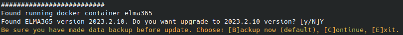

В процессе эксплуатации ELMA365 Standard (KinD) может потребоваться перенастроить компоненты приложения, например, отредактировать настройки сервисов — изменить настройки почтового сервера, изменить параметры подключения к приложению, настроить дополнительные опции и т. д.
Процесс изменения параметров приложения состоит из двух этапов:
- Внесения изменений в конфигурационный файл config-elma365.txt.
- Запуск скрипта установки с ключом --upgrade для применения новых параметров.

Параметры конфигурационного файла config-elma365.txt
Конфигурационный файл config-elma365.txt создаётся в текущем каталоге при первом запуске скрипта установки.
Параметры в конфигурационном файле config-elma365.txt разбиты на две группы:
- Основные — параметры минимально необходимые для быстрого разворачивания приложения ELMA365 Standard в Kubernetes-in‑Docker (KinD).
- Дополнительные — параметры, описывающие взаимодействие ELMA365 Standard (KinD) с внешними системами хранения данных, режимы и протоколы работы приложения.
начало внимание
Необдуманное изменение дополнительных параметров в конфигурационном файле config-elma365.txt может привести к потере работоспособности приложения ELMA365 Standard (KinD). Перед внесением изменений в этот файл рекомендуется создать его резервную копию.
конец внимание
Описание параметров конфигурационного файла config-elma365.txt
Наименование |
Описание |
|
IP- или URL-адрес, по которому будет доступна система. При установке системы с указанием доменного имени необходимо в DNS‑сервер внести соответствующую А-запись: Важно: если невозможно настроить разрешение доменного имени, необходимо включить дополнительный параметр установки |
Реквизиты для входа супервизора: |
|
|
Указывается email-адрес, который будет являться логином для входа супервизора. Важно: параметр |
|
Пароль для входа супервизора. Важно: используется при создании компании в момент установки ELMA365. Параметр можно изменить через веб-интерфейс, если указан email‑адрес супервизора системы. |
Язык интерфейса системы: |
|
|
Язык интерфейса системы. Доступные варианты: |
Редакция системы: |
|
|
Доступные варианты: В данной поставке выбор редакции |
Настройка соединения с SMTP-сервером (это соединение используется для отправки приглашений новым пользователям, восстановления паролей, отправки уведомлений о новых задачах): |
|
|
IP или URL-адрес для подключения к SMTP-серверу. |
|
Порт для подключения к SMTP-серверу. |
|
Email-адрес (наименование почтового ящика), от имени которого происходит отправка сообщений. |
|
Логин пользователя для подключения к SMTP-серверу. |
|
Пароль пользователя для подключения к SMTP-серверу. |
|
Использование TLS-шифрования SMTP-сервером. Доступные варианты: |
Настройка TLS-шифрования: |
|
|
Путь до SSL-сертификата (для включения поддержки HTTPS). SSL-сертификат должен быть fullchain. Важно: если в параметре |
|
Путь до закрытого ключа (для включения поддержки HTTPS). Важно: если в параметре |
|
Путь к сертификату корневого CA при использовании самоподписанного сертификата. Важно: если в параметре |
Настройки подключения к внешним базам данных: |
|
|
Строка подключения к PostgreSQL для операций записи и чтения. Формат:
О необходимой конфигурации PostgreSQL читайте в разделе «Подготовка внешних баз данных». |
|
Строка подключения к PostgreSQL для операций чтения. Формат:
О необходимой конфигурации PostgreSQL читайте в разделе «Подготовка внешних баз данных». |
|
Строка подключения к MongoDB. Формат:
О необходимой конфигурации MongoDB читайте в разделе «Подготовка внешних баз данных». |
|
Строка подключения к Redis. Формат:
О необходимой конфигурации Redis читайте в разделе «Подготовка внешних баз данных». |
|
Строка подключения к RabbitMQ. Формат:
О необходимой конфигурации RabbitMQ читайте в разделе «Подготовка внешних баз данных». |
Настройки подключения к S3-хранилищу файлов: |
|
|
Строка подключения к S3. Формат:
О необходимой конфигурации S3 читайте в разделе «Подготовка внешних баз данных». |
|
Наименование бакета в S3. Важно: если параметр проксирования подключения к внешнему S3 |
|
Логин пользователя для подключения к серверу S3. |
|
Пароль пользователя для подключения к серверу S3. |
|
Регион расположения сервера S3. |
|
Метод загрузки файлов в S3. Доступные варианты: |
|
Использование TLS-шифрования сервером S3. Доступные варианты: |
|
Включение режима Virtual-hosted style для S3. В этом режиме имя бакета является частью имени домена в URL‑адресе, например: Если параметр отключен, используется модель адресации Path‑style. Значение по умолчанию: Доступные варианты: |
|
Включение проксирования подключения к внешнему S3 (если сервер S3 изолирован в локальной сети). Доступные варианты: Важно: для проксирования подключения к внешнему S3, должны быть заполнены параметры подключения к серверу S3:
|
|
Адрес сервера S3 для резервного копирования. Формат:
|
Настройка директорий для установки системы и создания резервных копий: |
|
|
Путь к директории, в которую будет установлена система ELMA365 Standard (KinD). Значение по умолчанию: Важно: в случае установки приложения Docker через Snap, путь к директории установки необходимо сменить на Пример: |
Путь к директории, в которую будут сохраняться резервные копии системы ELMA365 Standard (KinD). Значение по умолчанию: |
|
Настройки для приватного репозитория Docker-образов: |
|
|
Адрес приватного репозитория Docker‑образов. Формат: |
|
Логин и пароль пользователя для доступа к приватному репозиторию. Формат: |
|
Включение создания локального приватного репозитория. Важно: укажите IP‑адрес машины ELMA365 и порт из параметра |
|
Порт для подключения к локальному репозиторию Docker-образов. Значение по умолчанию: |
|
Директория расположения локального репозитория Docker‑образов. Значение по умолчанию: Важно: в случае установки приложения Docker через Snap путь к директории расположения локального репозитория Docker-образов необходимо сменить на Пример: |
Настройка Docker: |
|
|
Настройка для смены подсети 172.17.0.0/16, используемой Docker по умолчанию. Укажите диапазон IP-адресов. Пример формата: |
|
Важно: при указании подсети в параметре |
|
Настройка MTU для Docker. |
Проброс портов к БД внутри Docker: |
|
|
Проброс локального порта на порт в поде к БД Postgres, указывается номер локального порта. |
|
Проброс локального порта на порт в поде к БД MongoDB, указывается номер локального порта. |
|
Проброс локального порта на Web порт в поде к БД RabbitMQ, указывается номер локального порта. |
|
Проброс локального порта на порт в поде к БД Redis, указывается номер локального порта. |
|
Проброс локального порта на Web-порт в поде к хранилищу данных MinIO S3, указывается номер локального порта. |
Настройка подключения ELMA365 к proxy-серверу: |
|
|
URL подключения к proxy-серверу для протокола https. Формат: где:
|
|
URL подключения к proxy-серверу для протокола http. Формат: где:
|
|
Указываются сетевые адреса, диапазоны сетевых адресов и домены, которые следует исключить из использования proxy. Значение по умолчанию: |
|
URL подключения к proxy-серверу для протокола https. Формат: где:
|
|
URL подключения к proxy-серверу для протокола http. Формат: где:
|
|
Указываются сетевые адреса, диапазоны сетевых адресов и домены, которые следует исключить из использования прокси. Значение по умолчанию: |
Параметры, не имеющие группы: |
|
|
Задаёт HOSTALIASES для доменного имени, указанного в параметре Важно: эту настройку следует использовать при установке системы с указанием доменного имени, если невозможно создать в DNS‑сервере соответствующей ААА записи ( По доменному имени, указанному в |
|
Режим работы сервера ELMA365 за прокси HTTPS. Доступные варианты: |
|
Режим отладки платформы ELMA365 Доступные варианты: |
|
Включение дополнительных параметров. Указывать необходимо в формате: Например, для увеличения допустимого объёма загружаемых в систему файлов применяется |
Включение дополнительных фича-флагов. Указывать необходимо в формате: |
|
Подключить сервис Аудит безопасности. Доступные варианты: После установки модуля сервис Аудит безопасности внутри кластера будет доступен по URL‑адресу |
|
Строка подключения к PostgreSQL для операций записи и чтения. Параметр указывается, если в Если параметр не настроен, используется встроенная база данных PostgreSQL. Формат:
|
|
Раскомментируйте и внесите правки в нужные параметры конфигурационного файла config-elma365.txt, сохраните изменения.
Применение новых параметров для ELMA365 Standard
- Для внесения изменений в параметры приложения ELMA365 Standard (KinD) выполните обновление приложения с помощью скрипта установки (
elma365-docker.sh), запущенного с ключом--upgrade.
Начало внимание
Параметры ELMA365_EMAIL и ELMA365_PASSWORD используются только при первичной установке системы, далее их изменения игнорируются скриптом.
Конец внимание
- Внесите изменения в параметры приложения ELMA365 Standard:
- для установки через интернет-соединение:
sudo ./elma365-docker.sh --upgrade
- для офлайн-установки без доступа в интернет:
sudo ./elma365-docker.sh --offline --upgrade
- После запуска скрипт установки определит версию установленной версии ELMA365 Standard (KinD) и предложит перейти на новую версию.
начало внимание
В случае простого применения новых параметров, версии ELMA365 Standard (KinD) должны совпадать.
конец внимание
Согласитесь с переходом на новую версию, прописав [Y]. Указание любого другого символа прервёт обновление приложения.

- Следующим шагом в скрипте установки вы увидите оповещение о необходимости сделать резервную копию перед обновлением ELMA365 Standard (KinD).
Для продолжения обновления приложения введите один из вариантов:
[B]— создание резервной копии (Backup);[С]— пропустить создание резервной копии (Continue);[E]— прервать обновление приложения (Exit).
- Создайте резервную копию и продолжите обновление ELMA365 Standard (KinD), указав для этого
[B]или нажав клавишу ENTER.
Скрипт установки выполнит резервное копирование и приступит к обновлению приложения.

- Дождитесь окончания обновления приложения. Вы увидите сообщение “Upgrade ELMA365 application successful”.
Обновление параметров ELMA365 Standard (KinD) завершено.